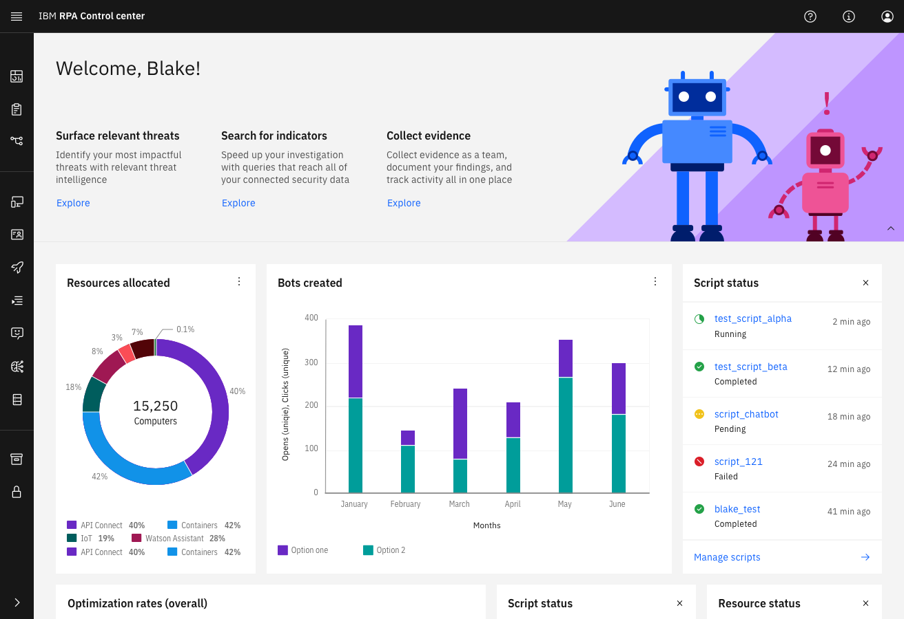
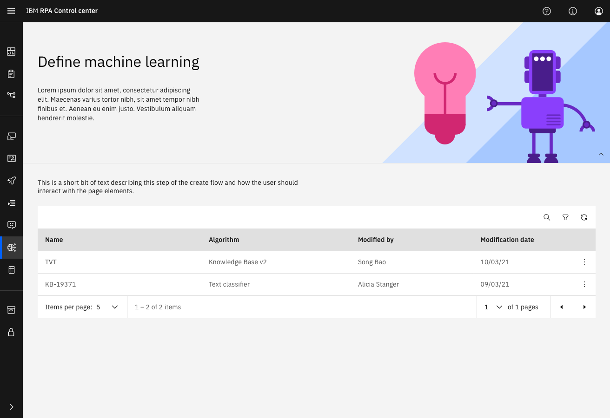
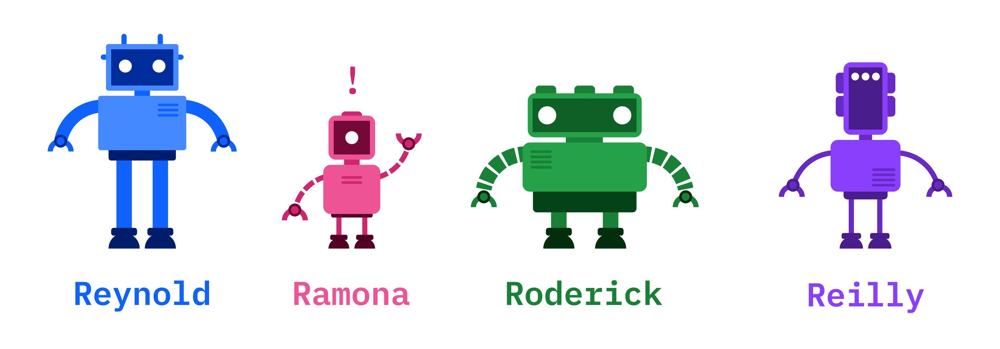
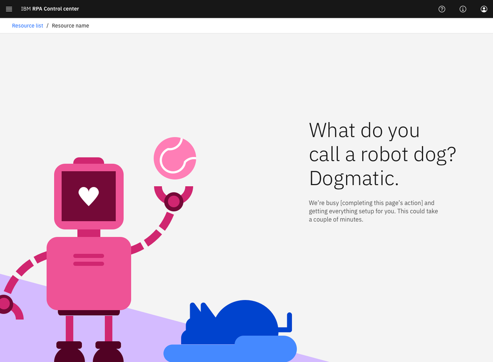
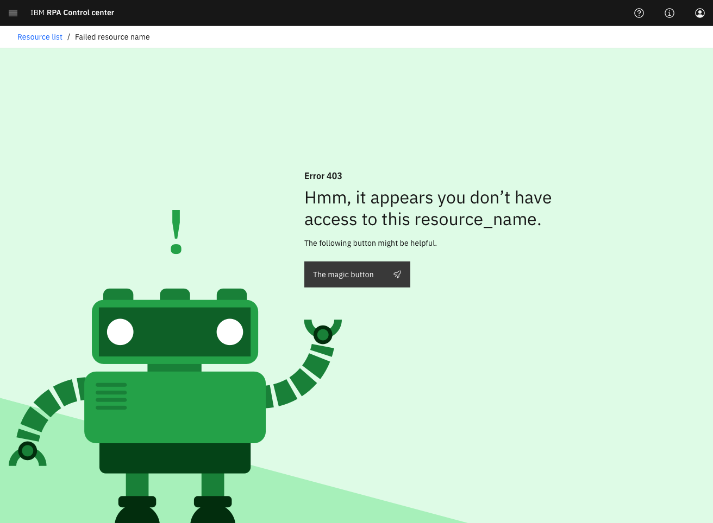

Overview
Problem: IBM RPA’s acquired software needed extensive redesign to meet IBM’s high standards for accessibility and usability. The installer experience was also a key pain point for users.
Outcome: A redesigned user interface and installer that significantly improved accessibility, usability, and user satisfaction. The new experience was praised by users and stakeholders alike.
The Challenge
The main challenge was ensuring the product met IBM’s high standards for usability and accessibility while redesigning the installer and other core user flows. Additionally, the software’s design needed to be in line with IBM’s branding, which required significant adjustments.
Our Goals
- Redesign the user interface to meet IBM’s accessibility standards
- Improve the installer experience to reduce user abandonment
- Create engaging illustrations to guide users throughout the RPA journey
- Propose a new dashboard design to enhance usability and functionality
What we Did
1. Bluewashing and Usability Improvements
We began by redesigning the interface to meet IBM’s accessibility and usability guidelines, focusing on simplifying the user journey and improving user interactions.


2. Creating Robot Helpers & Illustrations
We created a set of robot helpers to provide contextual help and guide users through the RPA journey. These illustrations made the experience more enjoyable and helped users feel more engaged.

3. Error & Loading Screens
We redesigned the error and loading screens to include robot illustrations and fun puns, making the waiting time feel more engaging and less frustrating for users.
.jpg)


.png)
Outcomes
- The redesigned interface significantly improved accessibility and usability.
- User feedback was overwhelmingly positive, with many users praising the ease of use and engaging design.
Reflections
Designing for enterprise software doesn't mean it can't be fun. The success of this project taught me the importance of making complex processes feel simple, intuitive, and approachable. It was rewarding to see the product not only meet IBM’s high standards but also make users genuinely happy with the experience.